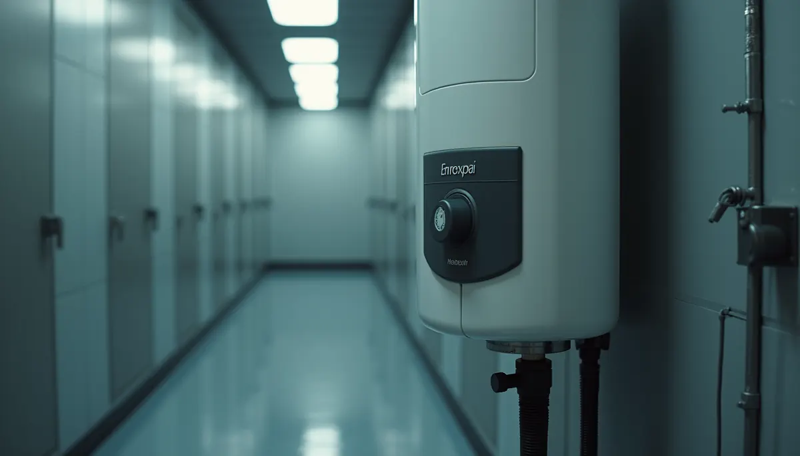

Do you really know what lies behind the hot water that flows from your tap? Water heaters are vital parts of our daily lives, yet many of us overlook their importance until something goes wrong. A solid understanding of how your water heater operates can save you time, money, and discomfort when it comes time to fix or replace it. The local big-box store may not always offer the best options, and being informed can give you an edge.
The Inner Workings: Why Construction Matters
Your water heater is much more than just a metal tank; it’s a carefully engineered device packed with multiple components that work together to heat and store water safely and efficiently. Here are key aspects that make understanding its construction essential:
Tank Material and Lining
Most residential water heaters are made from steel, but different linings—such as glass, ceramic, or plastic—affect how well they resist corrosion. A steel tank with a high-quality glass lining can survive 10 to 15 years longer than a poorly lined tank. In fact, a durable lining can cut the chances of leaks significantly, minimizing the risk of costly repairs or water damage.
Anode Rod
This small but mighty component is your water heater's best friend. Made from magnesium, aluminum, or zinc, the anode rod sacrifices itself to protect your tank from rust. If you replace it every 2 to 3 years, you can extend your water heater’s lifespan by several years. Ignoring this simple maintenance task can lead to a tank filled with rust and cold showers.
Heating Elements (Electric) or Burner Assembly (Gas)
These components directly heat your water. High-efficiency heating elements, designed with advanced technology, can cut energy use by about 10 to 25 percent. A well-constructed burner assembly in gas models can lead to quicker heating times, ensuring you don’t have to wait long for hot water.
Insulation
Good insulation prevents heat loss, meaning your water heater operates more efficiently. Inadequate insulation can lead to energy bills that are 10 to 20 percent higher than necessary. Insulating your water heater can make a noticeable difference in your overall energy costs.
Valves and Controls
Critical safety features such as pressure relief valves, temperature controls, and drain valves help prevent dangerous scenarios like overpressure or overheating. Familiarizing yourself with their functions ensures that your unit remains both safe and effective.
By understanding these components, you can better assess the quality of a water heater and identify potential issues before they become serious problems.
The Cost of Ignorance
Many homeowners only realize the importance of water heater construction when faced with a costly breakdown. Neglecting maintenance can lead to repairs that cost hundreds, if not thousands of dollars. If you mistakenly believe your heater can run indefinitely, a rusted tank might leave you scrambling for repairs and without hot water.
Moreover, picking a unit without considering its efficiency can cost you in wasted energy. Did you know that choosing an energy-efficient water heater can save you around 20 percent on energy bills annually? Higher efficiency ratings translate not only to lower bills but also to smaller carbon footprints.
Making an Informed Purchase
Choosing a new water heater can feel overwhelming, especially with flashy offers at big-box retailers. However, making an informed decision is crucial. Consider the following before making your purchase:
Research Brands and Models
Not all brands are equal. Some, like Rheem and AO Smith, have long-standing reputations for reliability and efficiency, however, what is sold in big box retail stores is significantly different from professional series units that are sold by your local plumbing expert, like Angle Stop Plumbing. Look for customer reviews and ratings to guide your decision. A model that costs slightly more upfront might prove more durable over time, potentially saving you money.
Consider Your Hot Water Needs
The capacity of your water heater should align with your household's demands. For example, a family of four typically requires a tank that holds at least 50 gallons, while a single person might find that a 30-gallon tank suffices. Oversizing or under sizing can lead to inefficient operation along with unnecessary energy cost.
Look Beyond the Purchase Price
The allure of a low upfront cost can be deceptive. An energy-efficient water heater may have a higher initial price but could save you more than $200 annually in energy costs. Choose a model you can comfortably budget for now, while also considering the long-term savings.
Regular Maintenance is Key
Proper maintenance of your water heater is critical for ensuring it runs smoothly for years. Regular upkeep involves more than just cleaning; it plays a significant role in the unit’s efficiency.
Flushing the Tank
Sediment build-up can decrease performance and efficiency. Flushing the tank every 6 to 12 months can help remove deposits and extend your water heater’s lifespan. Regular flushing can improve efficiency by up to 10 percent, ensuring your water heats consistently. Go one step further and add a point of use sediment filter to keep contaminants out of your water heater altogether.
Checking the Anode Rod
An inspection every couple years for the anode rod can save you the headache of replacing a rusted tank. Investing a little time and cost into this maintenance can prevent significant repairs down the road.
Testing Safety Features
Have your pressure relief valves and temperature settings checked at least once a year. Regular tests can catch issues before they escalate, protecting your home from potential hazards.
When to Call in a Professional
Despite your best maintenance efforts, problems can arise. Signs such as inconsistent water temperatures or leaks should prompt immediate action by calling your local experts at Angle Stop Plumbing. Don’t ignore these warning signals; they can indicate more serious issues.
Identifying Pivotal Issues
Recognizing the following signs can help you act swiftly:
- Fluctuating water temperatures that come and go
- Strange noises like popping or rumbling coming from the unit
- Discoloration of water or unpleasant odors
- Visible leaks or moisture around the water heater
These problems often indicate deeper issues that require the expertise of a qualified technician from Angle Stop Plumbing to prevent further damage.
Key Takeaways for Your Water Heater
Understanding your water heater is essential for ensuring its longevity and efficiency. By recognizing its construction, keeping up with regular maintenance, and making informed purchase decisions, you can avoid headaches and unexpected costs.
Investing a little time in learning about your water heater from Angle Stop Plumbing can lead to warmer showers and a more comfortable home. With Well-informed choices, you can transform your water heater from an overlooked fixture into a reliable ally in your daily life.